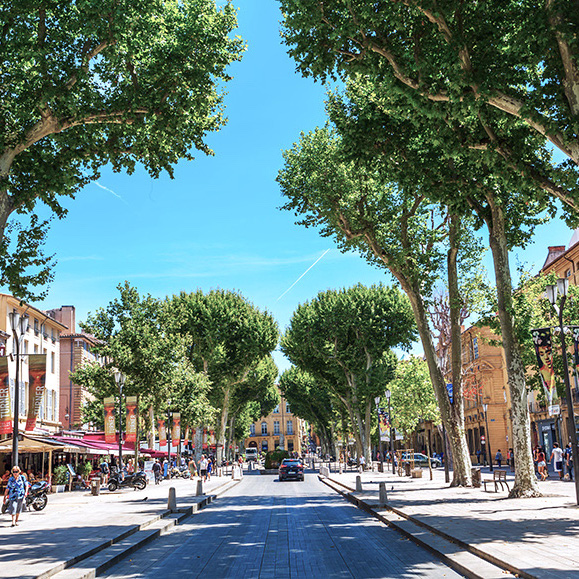
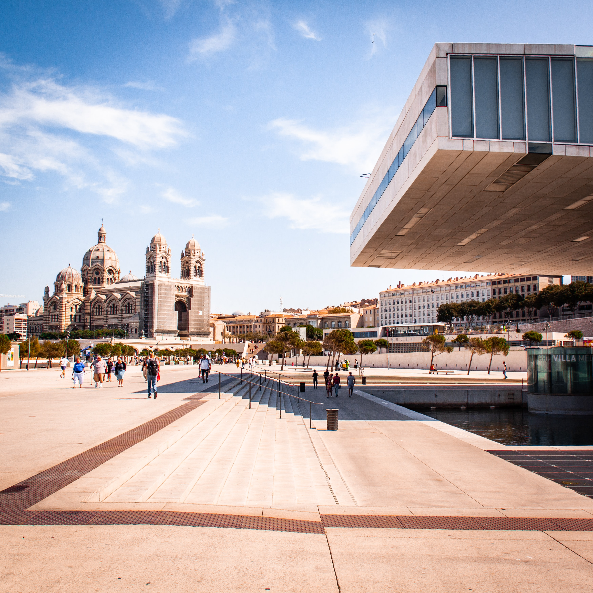
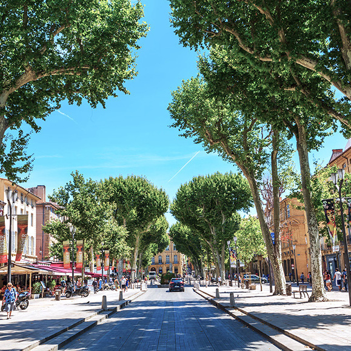
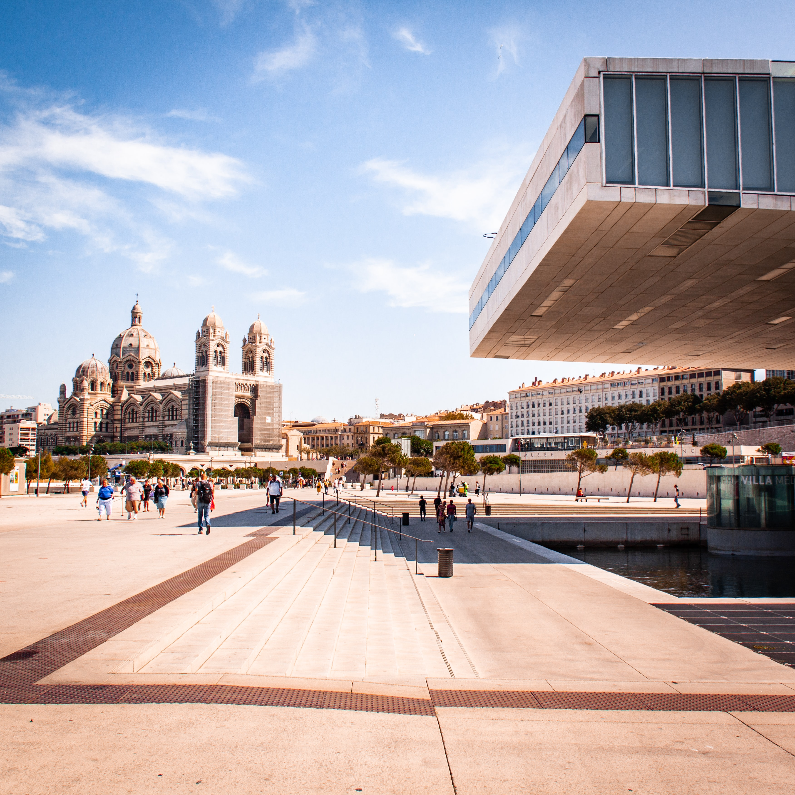

Durée
Vous êtes limité par le temps, ou au contraire vous souhaitez marcher des heures et des heures ?
On a trié toutes les balades de la région en fonction du temps de marche que vous pouvez y accorder !

Toutes les plus belles balades du Sud répertoriées selon vos critères
Découvrir →Une journée de rando à la montagne ? Une balade d'une heure ou deux à la mer ? On vous aide à choisir !
La région PACA possède l'un des patrimoines les plus riches du pays !
Balade en kayak dans les Gorges du Verdon, randonnée aux Calanques ou même escalade à la Saite-Victoire, tout est possible. Le Sud a tant de paysages à offrir, faites votre choix ~
Vous êtes limité par le temps, ou au contraire vous souhaitez marcher des heures et des heures ?
On a trié toutes les balades de la région en fonction du temps de marche que vous pouvez y accorder !
Que vous soyez randonneur aguéri ou amateur de balades, tout est possible !
Certains veulent à tout prix éviter les randonnées aux dénivelés incroyables. Tandis que d'autres sont là pour le challenge, et sky is the limit ~
Marseille est une ville incroyable et ce ne sont pas les coins instagrammables qui manquent. Voici donc notre sélection d'endroits magnifiques à Marseille, et inconnus aux bataillons.
Lire l'article →Cet article s'adresse aux amoureux de lauriers roses, lilas, pivoines...
De fleurs quoi. Découvrez des villages atypiques de la Provence aux décors fleuris.
Vous aimez les challenges de rando ? Au contraire, vous voulez à tout prix éviter une entorse à la cheville en allant aux calanques ? Voici les 3 calanques les plus difficiles d'accès.
Lire l'article → 


